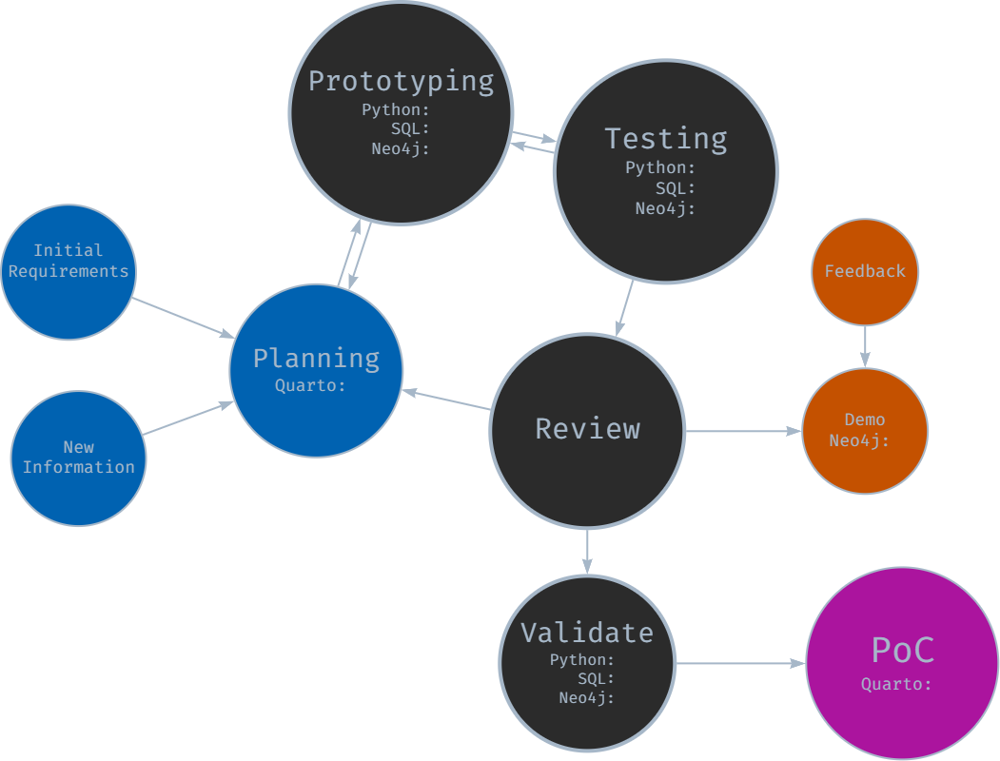

Data Engineering Approach
I followed an iterative, agile-inspired approach despite being a team of one. This method allowed for flexibility, continuous improvement and the opportunity to adapt to new insights during the process (Beck, K., et al. 2001).
The bulk of my effort was spent prototyping, testing and reviewing with each iteration resulting in a new challenge, issue, or opportunity.

Initial Planning and Requirements Gathering
The development cycle began with initial high-level planning and requirements gathering, where I imagined how each stage should work, trying to bear in mind future-proofing and repeatability principles.
I defined core functionality for each module (extraction, transformation, loading) and outlined initial technical requirements and constraints. The planning documentation was maintained in Quarto and markdown files in a centralised repository for project information.
Prototyping
Following initial planning, rapid prototyping was undertaken for each module:
- SQL prototyping for data extraction queries
- Python prototyping for data transformation and processing logic
- Neo4j prototyping for graph database schema and loading procedures
This stage allowed for quick exploration of different approaches and early identification of potential challenges as well as giving me the confidence to continue with my exploration.
Component-Based Development and Testing
- Each module (extraction, transformation, loading) was developed separately with a view to distinct “handovers”
- An iterative, component-based testing approach was employed
- While formal unit tests were not always created, each component was thoroughly tested for functionality
This approach allowed for continuous progress while maintaining a focus on component-level quality. It was during this phase that I started expanding configuration, logging and error-handling options - and I am glad I did!
Integration -> Review -> Demo -> Feedback -> Repeat
As components reached a (more) stable state, they were integrated and reviewed:
- Components were combined to form larger functional units
- Integrated functionality was occasionally demonstrated to subject matter experts (e.g. data manager)
- Feedback was gathered on functionality, usability, and alignment with requirements
Insights gained from reviews, demonstrations and ongoing development were continuously fed back into the process. New requirements or modifications were documented, for example updates to SQL SELECT statements and data model interpretations.
Each change required decisions - but I did not always make the right ones!
Version Validation and Documentation
At pivotal junctures, e.g., when a stable version was achieved:
- End-to-end validation of the entire pipeline was performed.
- Results were documented in notebooks, including opportunities for improvement.
- Bugs and opportunities were logged for future iterations.
Continuous Learning and Adaptation
Learning and adaptation became central to the project. Each iteration brought new insights, often through trial and error and certainly through unintended consequences or unforeseen complications. Early challenges included the need to modularise components before they became unmanageable and resisting the temptation to make overly ambitious changes. With practice, I became better at recognising when refactoring was necessary.
Developing the ETL was not a linear journey. There were many moments of frustration, periods of seemingly endless, painstaking troubleshooting, and a constant battle against the urge to over-deliver. Yet, with each stumble, the process itself became more refined, transforming into a powerful tool for identifying and resolving issues.
While core MVP (minimum viable product) requirements remained relatively stable (I set them after all!), iterating allowed me to seize opportunities for enhancement. Each chance to modularise, parameterise, or fine-tune sparked an almost compulsive drive for improvement, pushing the pipeline beyond its initial scope.
Ultimately it all resulted in a robust, flexible solution that can adapt (relatively) gracefully to unforeseen challenges and serve as the starting point for future opportunities.
- Data Engineering Approach - Data Engineering Approach - Data Engineering Approach